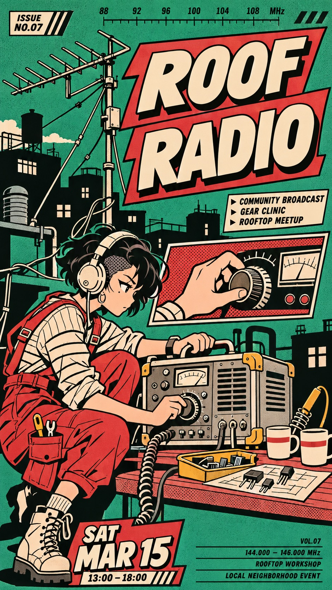
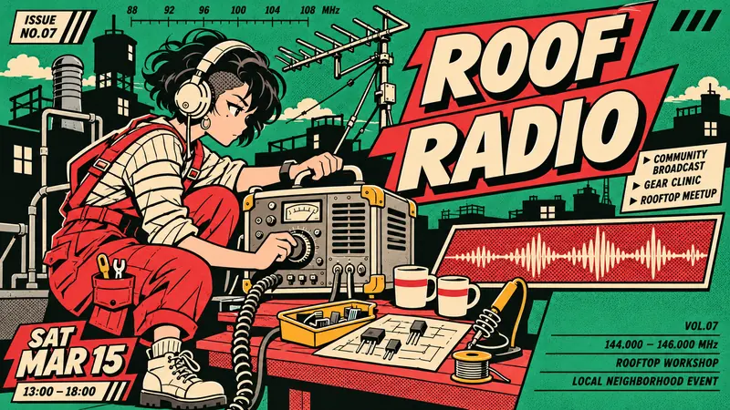
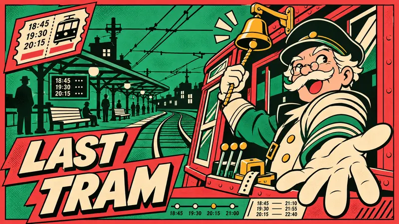
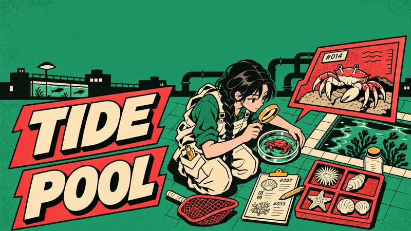
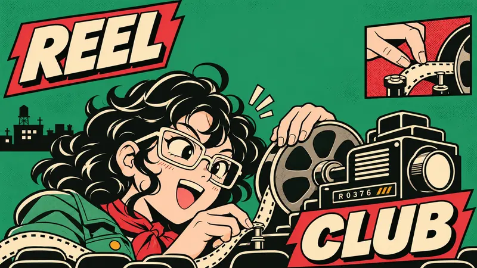

Type Posters · AI image style prompt
Jade Scarlet Panel Press
Character-led neighborhood bulletin posters: scarlet comic panels and cream outlined capitals cut across jade grounds with black street-print silhouettes in staggered editorial modules.

4 example cases
Same style.json, different subjects. Each case's values are in the examples section of the JSON.




What this style does
A fused character-led neighborhood bulletin: scarlet comic panel energy and cream outlined lettering intersect jade-and-black street-print silhouettes, arranged as staggered editorial modules.
Signature traits
- Keep an original human cartoon character as the clear hero of a lively illustrated neighborhood event bulletin.
- Use steady heavy black contours, simple cream cel fills and one hard shadow, with no painterly light or optical blur.
- Jade green is the main ground, black builds setting silhouettes, scarlet creates large comic panels, cream fills the headline and character, and ochre is a tiny equipment accent.
- Draw wide heavy slightly forward-slanted sans capitals in cream with black outlines and a short solid black offset shadow, arranged on staggered cut-ended red panels.
- Fuse thick comic scene borders and overlapping character limbs with black urban silhouettes and small newsprint caption rails.
- Keep about 20–25 percent calm flat field, one focal character and dense simple scene content in bounded panels; preserve energetic overlaps without filling every gap.
style.json
{
"schema_version": "2.2",
"style_version": "1.0.0",
"style_name": "Jade Scarlet Panel Press",
"style_slug": "jade-scarlet-panel-press",
"style_summary": "A fused character-led neighborhood bulletin: scarlet comic panel energy and cream outlined lettering intersect jade-and-black street-print silhouettes, arranged as staggered editorial modules.",
"category": "Type Posters",
"environment_variables": {
"ASPECT_RATIO": "9:16 or 16:9",
"STYLE_FIDELITY_ANCHORS": "Injected ordered CORE and FLEX rules",
"SOURCE_CONTENT_TO_AVOID": "Injected reference-specific content exclusions",
"MAIN_TEXT": "Exact primary event title",
"SUBJECT": "Original human character identity and clothing",
"SCENE": "Character action and bounded narrative setting",
"DESIGN_DIRECTION": "Theme-driven composition with separate plans for both ratios",
"TEXTURE_TEXT": "Nonessential small editorial text"
},
"style_fidelity_anchors": [
"[CORE] Keep an original human cartoon character as the clear hero of a lively illustrated neighborhood event bulletin.",
"[CORE] Use steady heavy black contours, simple cream cel fills and one hard shadow, with no painterly light or optical blur.",
"[CORE] Jade green is the main ground, black builds setting silhouettes, scarlet creates large comic panels, cream fills the headline and character, and ochre is a tiny equipment accent.",
"[CORE] Draw wide heavy slightly forward-slanted sans capitals in cream with black outlines and a short solid black offset shadow, arranged on staggered cut-ended red panels.",
"[CORE] Fuse thick comic scene borders and overlapping character limbs with black urban silhouettes and small newsprint caption rails.",
"[CORE] Keep about 20–25 percent calm flat field, one focal character and dense simple scene content in bounded panels; preserve energetic overlaps without filling every gap.",
"[CORE] Use sparse fine ink grain only within green fields and a few halftone shadow panels, leaving faces and headline edges clean.",
"[FLEX] Move the headline modules among top, side, bottom and split positions while keeping their typography and palette roles.",
"[FLEX] Vary character crop, camera angle, pose, equipment and the shape and location of narrative inset panels."
],
"source_content_to_avoid": [
"R1 red-haired cat-eared schoolgirl, sailor bow, raised badge pose and shopping bags",
"R1 COMIC MARKET, 105, dates, central aisle, symmetrical hand panels and paired face insets",
"R2 orange-bob courier carrying a cardboard box, frog, duck, wind-up mascot crowd and red boots",
"R2 custom masthead, NEWSLETTER, ZZZ, logos, giant 24-hour circle and bottom sponsor strip",
"Any source identity, copied costume, watermark, username, QR code or recognizable brand emblem"
],
"visual_deconstruction": {
"references": {
"R1": {
"genre": "Character-led convention poster",
"grammar": "Heavy comic outlines, cream bubble-like block lettering, vermilion panels, flat cel art, inset actions",
"signature": "Red field + centered raised-arm cat-girl + gigantic top event numeral + paired face insets",
"energy": "About 10–15% quiet surface; high bounded density, 4 overlapping planes, low disorder, strong border crossings.",
"finish": "Mostly clean ink with local halftone.",
"type": "Wide upright heavy rounded sans with thick outline and offset black shadow."
},
"R2": {
"genre": "Character-led fictional urban newsletter",
"grammar": "Jade ground, black city silhouette, chunky italic grotesk masthead, dense objects, short caption rails",
"signature": "Huge custom slanted black masthead + green ground + central orange-haired box-carrying courier and mascot crowd",
"energy": "About 30–35% quiet field; dense bounded character zone, 3–4 planes, subtle grain, strong dark/light graphic contrast.",
"finish": "Flat restrained fills, fine green print grain, simpler peripheral characters.",
"type": "Wide forward-slanted geometric display sans plus condensed editorial sans."
}
},
"fusion": {
"genre": "Shared: original human character key art in editorial/event context.",
"palette": "R2 jade main field and black silhouettes; R1 substantial scarlet panels and cream headline/hero; ochre restricted to props.",
"rendering": "R1 black contour and cream cel hero; R2 simplified scene silhouettes and local grain.",
"type": "R1 cream outlined shadowed capitals fused with R2 forward slant; custom mastheads and numerals replaced.",
"layout": "R1 bounded action panels and limb overlap; R2 editorial caption rails; new staggered cut-ended title modules.",
"secondary": "R1 action-detail insets combined with R2 technical street equipment; no mascots, source logos or full-width sponsor bar.",
"energy": "Median quiet-share target 20–25%, 3–4 overlapping planes, modest disorder, strong asymmetry.",
"balance": "R1 dominates contour, title fill/outline and panel border; R2 dominates main field, setting silhouette, title slant and print character. Genre and overlap are shared. Neither source supplies over about half of the visible system."
},
"energy": {
"quiet_surface": "20–25% target, tolerance 18–28%; flat fields count as quiet even when saturated.",
"density": "Dense bounded scene and large type; essential.",
"layering": "3–4 planes, hero crossing panel borders; essential.",
"disorder": "Low, with fine local grain and slight ink character; no dirt or paper wear.",
"tension": "Strong crop and asymmetry, title competing productively with character; essential.",
"color_budget": "Five colors including cream paper; four inks black, jade, scarlet, ochre."
},
"grammar": "Common comic-poster and urban-print vocabulary rather than either source identity.",
"signature": {
"R1": "Replace red full field and centered symmetrical key art with jade field, off-center camera-driven scenes and staggered red title modules; omit huge date/event number.",
"R2": "Retain jade but replace black custom top masthead with cream outlined stepped modules in varying positions; remove box-courier and mascot parade."
},
"series_constants": "Jade ground, black settings/contours, scarlet structural panels, cream title and character, small ochre gear; neutral flat lighting; cut-ended title blocks, thick comic borders, short caption rails."
},
"composition": {
"design_layer": "About 30–40% in thick panel frames, substantial red title modules and flat editorial fields.",
"placement": "Four different title/hero relationships across cases, no fixed top masthead or sponsor footer.",
"ratios": "Recompose every pair according to case direction; never crop the portrait to make the landscape."
},
"typography": {
"primary": "Wide heavy slightly italic sans capitals, cream with black outline and short solid shadow; exact case title only is primary.",
"secondary": "Condensed uppercase mini captions and tiny numbers used as graphic texture."
},
"color_palette": {
"jade": "#26895F",
"scarlet": "#D93D3C",
"cream": "#F0E3C5",
"black": "#101912",
"ochre": "#E4AD38",
"roles": "Jade ground, scarlet panels, cream title/hero, black contour/setting, ochre under 5% for props."
},
"image_treatment": {
"rendering": "Confident heavy contour; simple flat cel fills with at most one shadow. No soft glow, blur, painterly gradients or realistic 3D.",
"texture": "Fine low-strength ink grain confined to green fields and sparse halftone shadow panels, roughly 15–25% of total area; clean facial features and primary glyphs. No scratches, stains, torn paper or amplified distress.",
"lighting": "Neutral flat illustrated light across all scenes."
},
"design_rules": [
"Human character remains the focal point in every case.",
"Both references must remain visible through substantial palette and structural contributions.",
"Primary title must match exactly; small texture text is exempt.",
"Keep calm field share and local texture limits; do not confuse saturated fields with detail.",
"Title occupies at least three different placement families across the series."
],
"do": [
"Use fresh actions and camera angles within character key art.",
"Keep chunky contour and restrained flat printing.",
"Let subject and equipment cross structural frames."
],
"avoid": [
"Source character identities or signature compositions.",
"Polished anime rendering, depth blur, gradients and lighting effects.",
"Uniform top-title central-standing-hero template.",
"Adding full-width bottom sponsor strips."
],
"prompt_template": "Create one complete original character-event poster, aspect ratio {ASPECT_RATIO}. Fusion: jade ground and black street silhouettes from a flat urban newsletter meet scarlet bounded comic panels and cream outlined title/hero from an energetic event poster. The new common device is staggered cut-ended scarlet headline modules, not either reference masthead. STYLE: {STYLE_FIDELITY_ANCHORS}\nCHARACTER: {SUBJECT}\nSCENE: {SCENE}\nCOMPOSITION: {DESIGN_DIRECTION} Follow only the plan for the requested ratio.\nPRIMARY TITLE, exactly: {MAIN_TEXT}. All letters must remain readable. SECONDARY TEXTURE: {TEXTURE_TEXT}\nKeep 20–25% calm flat area, about 30–40% visible graphic design structure, substantial green ground and red panels in every image. Neutral flat cel lighting, no gradients. Fine low-strength ink grain only in some green fields and halftone shadow panels, around 15–25% of total area; clean title and face contours; no paper damage. Five-color palette: jade #26895F, scarlet #D93D3C, cream #F0E3C5, black #101912, ochre #E4AD38 used sparingly.\nREPLACE ALL SOURCE CONTENT: {SOURCE_CONTENT_TO_AVOID}",
"negative_prompt": "Copied reference characters, cat ears, sailor outfit, shopping bags, cardboard-box courier, frog mascot, recognizable logos, source mastheads, identical source layouts, full-width sponsor strip, photorealism, CGI, gradients, soft glow, depth blur, painterly detail, paper stains, torn edges, illegible primary title, centered template repetition.",
"examples": [
{
"case_name": "roof-radio",
"values": {
"MAIN_TEXT": "ROOF RADIO",
"SUBJECT": "An original adult woman radio mechanic with a short black undercut, round cream headphones and scarlet utility overalls over a cream striped shirt.",
"SCENE": "She crouches on the left of a rooftop workbench, twisting the knob of a large portable transmitter with one hand and bracing its casing with the other. Coiled cables, aerial rods, ceramic cups, transistor parts, vents and black chimney silhouettes fill the bounded scene. No waving arm.",
"DESIGN_DIRECTION": "The antenna and cable rhythm makes the composition climb. 9:16: three-quarter full figure crouched in lower-left, two staggered headline panels in upper-right, one horizontal inset of a tuning hand across the middle-right, calm green strip low-right. 16:9: character large on left, transmitter center, stepped headline upper-right with a low wide waveform inset. Keep a distinct black skyline and red comic panels.",
"TEXTURE_TEXT": "Small technical frequency ticks, issue marks and short editorial captions as nonessential texture; no brands."
}
},
{
"case_name": "last-tram",
"values": {
"MAIN_TEXT": "LAST TRAM",
"SUBJECT": "An original older male tram conductor with a cream moustache, small round spectacles, black cap and a cream uniform coat with green sleeves.",
"SCENE": "He leans out of an open old tram cab on the right, looking back over his shoulder while pulling a brass bell cord. A huge cream-gloved hand foreshortens toward the viewer. Black overhead wires, ticket punches, switch levers, red framed cab windows and a distant green platform produce a lively street scene.",
"DESIGN_DIRECTION": "Departure drives a strong diagonal from bell to receding platform. 9:16: right-side waist-up conductor, two stacked title modules in the lower-left, narrow diagonal ticket-shaped inset upper-left. 16:9: right-side conductor close-up, title bottom-left, track diagram and platform sweep leftward. Never use a top masthead. Green calm areas are around the overhead wires, scarlet framing forms a large visible panel.",
"TEXTURE_TEXT": "Tiny timetable-like numbers and route marks as nonessential texture; no copied route logo."
}
},
{
"case_name": "tide-pool",
"values": {
"MAIN_TEXT": "TIDE POOL",
"SUBJECT": "An original adult marine naturalist with long black hair in a single braid, cream waterproof dungarees, rolled green sleeves, bare head and ochre magnifying lens.",
"SCENE": "Seen steeply from above, she kneels near the center-right of a tiled public aquarium work basin, inspecting a small crab in a shallow dish with her magnifying lens. Her face remains visible in three-quarter profile. A red net, specimen trays, clipped notes, shell shapes, hoses and silhouetted pipework create a busy but simply drawn observation scene.",
"DESIGN_DIRECTION": "Observation turns the page into a top-down field notebook with a human hero. 9:16: title modules run down the left edge as two rotated horizontal words reading bottom-to-top, kneeling figure occupies middle-right, an irregular red-bordered crab inset lies upper-right, flat green negative field below. 16:9: overhead figure slightly right of center, title on left in two oblique modules, broad specimen-panel band lower-right. Avoid full frontal standing poses and mascot crowds.",
"TEXTURE_TEXT": "Small field-note ticks and specimen numbers only as decorative editorial texture."
}
},
{
"case_name": "reel-club",
"values": {
"MAIN_TEXT": "REEL CLUB",
"SUBJECT": "An original adult woman projectionist with black curly hair, cream rectangular spectacles, green work jacket and a scarlet neck scarf.",
"SCENE": "Extreme close-up of her expressive face behind a large old film projector: one hand threads a cream film strip through black reels and the other steadies a reel. Her enlarged eye and grin dominate, not the projector. Film loops, lens circles, empty cinema seat silhouettes and a red comic inset of the threading fingers provide scene detail.",
"DESIGN_DIRECTION": "Bold case: push the scale jump and crop harder than either reference, with the human face very large at center-left. 9:16: REEL on a short upper-right red cut-ended module, CLUB on a lower-left module, projector intrudes from lower-right; a diagonal film loop ties the split words together; green quiet area upper-left. 16:9: eye and face huge center-left, REEL upper-left and CLUB lower-right, projector intrudes from right, red hand inset near top-right. Cream headlines remain fully readable. Do not turn into an equipment product ad.",
"TEXTURE_TEXT": "Tiny reel-counter numerals and brief editorial marks, treated as secondary graphic texture."
}
}
]
}